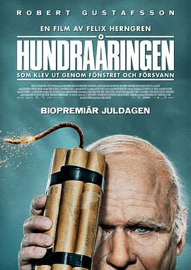

百岁老人跷家去 / Hundraåringen som klev ut genom fönstret och försvann
又名：百岁老人跷家记 / 百岁老人翘家去 / 翻窗户消失的百岁老人 / 老而嚟癲(港) / The 100-Year-Old Man Who Climbed Out the Window and Disappeared
老年技术宅轻松秒杀掉摩托党
作品信息
| 导演 | 菲利克斯·赫恩格伦 |
| 编剧 | 菲利克斯·赫恩格伦 / Hans Ingemansson |
| 主演 | 罗伯特·古斯塔夫森 / 伊瓦尔·韦克兰德 / 戴维·维贝格 / 米娅·斯凯林格 / 延斯·赫尔腾 / 比安卡·克鲁赛罗 / 阿兰·福德 / 斯文·勒恩 / 戴维·沙克尔顿 / 凯瑞·莎勒 / 菲利普·罗施 |
| 类型 | 喜剧 / 冒险 |
| 制片国家/地区 | 瑞典 |
| 语言 | 瑞典语 / 英语 / 德语 / 法语 / 西班牙语 / 俄语 |
| 上映日期 | 2013-12-25(瑞典) |
| 片长 | 114分钟 |
| IMDb | tt2113681 |
最后一次看到是 2026-08-12T21:13:00+08:00 · 豆瓣原页